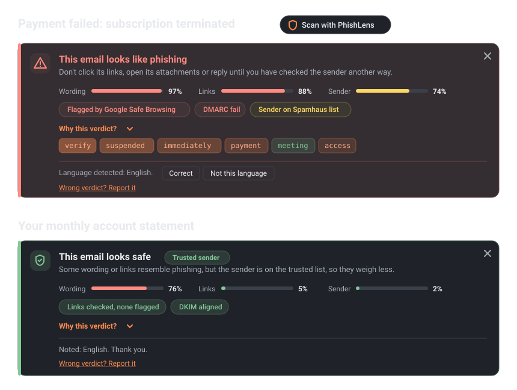
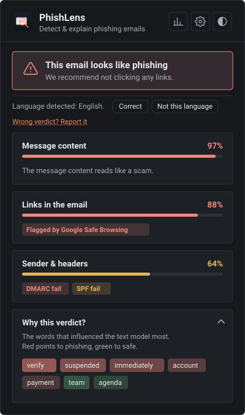
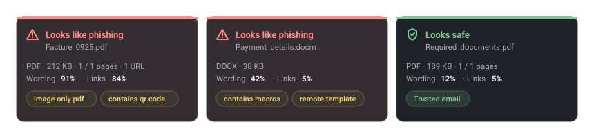

22
Sprachen, die das Textmodell liest
Chrome-Erweiterung · Gmail + Outlook · 8 Sprachen · quelloffen
PhishLens zeigt über jeder E-Mail in Gmail und Outlook ein Urteil: einen Wert pro Prüfung, die gefundenen Signale und die Wörter, die am meisten zählten. Klicken Sie auf Prüfen, oder lassen Sie neue E-Mails automatisch prüfen.

Offline-Testdaten und ein Lasttest auf PhishLens Cloud. Echte Postfächer sind schwieriger: siehe die bekannten Grenzen.
Beim Laden der Seite vom Server gelesen. Die Zähler beginnen nach einem Neustart des Servers bei null.
Echte E-Mails von Banken und Hochschulen verwenden dieselben Wörter wie Phishing, deshalb meldet ein Textmodell allein sie. PhishLens prüft die Belege, bevor es entscheidet.


Dieses Formular nutzt denselben Server wie die Erweiterung. Nichts wird gespeichert, aber verwenden Sie bitte Test-E-Mails, keine privaten.
Hier erscheinen das Urteil, der Wert jeder Prüfung und die Wörter dahinter.
Der Eintrag im Chrome Web Store ist in Vorbereitung. Bis dahin laden Sie die Erweiterung aus dem Repository: etwa zwei Minuten.
chrome://extensions und aktivieren Sie den Entwicklermodus (oben rechts).extension/.huggingface-cli download AnzouKiona/phishlens-distilbert \ --local-dir backend/model cd backend && docker compose up --build
Python ohne Docker, Konfiguration und Betrieb: siehe die Schnellstartanleitung (auf Englisch).